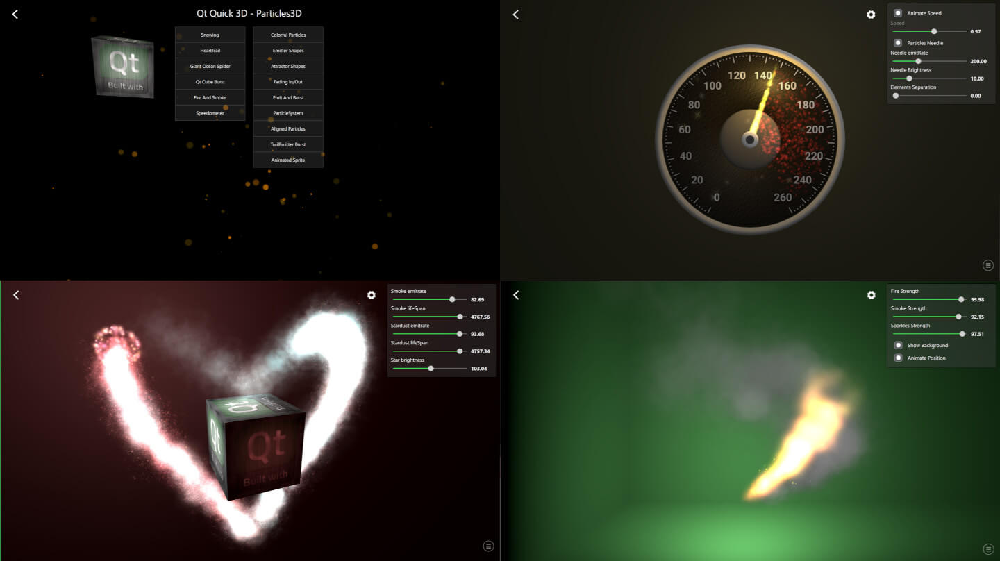
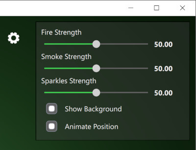
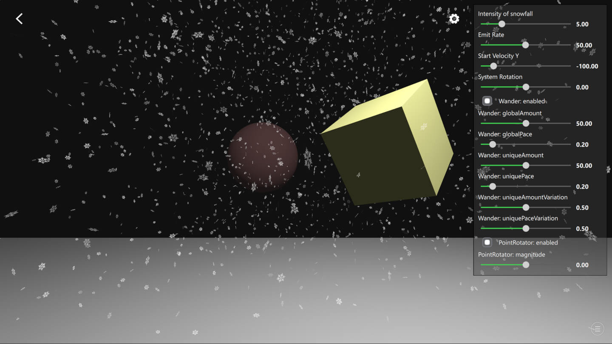

Qt Quick 3D - Particles 3D Testbed Example
Demonstrates how to use the Qt Quick 3D Particles3D module.

This example demonstrates different ways to use the QtQuick3D.Particles3D module features. Particles Testbed contains a collection of examples, some emphasizing a particular feature and some combining more features for achieving the desired appearance.
Common Features
The examples inside the Testbed share some common features. To exit the example back to launching screen, press the back arrow at the top-left corner.
Bottom-right corner of each example contain an icon that opens the logging view. From this view, you can see different debug data about the particles. Each ParticleSystem3D has its own row showing its ParticleSystem3DLogging data.
Top-right corner of the most examples contain a settings view which can be shown or hidden by clicking its icon. These settings help to demonstrate individual API features as well as the dynamic behavior of the particle systems.

Snowing Example
Let's go through the basics of Particles3D by looking at the Snowing example.

First, import the QtQuick3D.Particles3D module with the following statement:
import QtQuick3D.Particles3D
ParticleSystem3D is the root of the particle system which handles the system timing and groups all the other related elements like particles, emitters, and affectors together.
ParticleSystem3D { id: psystem // Start so that the snowing is in full steam startTime: 15000
Then we create a SpriteParticle3D which is a visual 2D texture particle. If we would need a 3D model particles we could alternatively use ModelParticle3D. Defining the amount of particles with maxAmount is important so that optimal buffer sizes get allocated. Here our snowflakes are white, with varied opacity and they fade in and out in 1000ms.
SpriteParticle3D { id: snowParticle sprite: Texture { source: "images/snowflake.png" } maxAmount: 1500 * sliderIntensity.sliderValue color: "#ffffff" colorVariation: Qt.vector4d(0.0, 0.0, 0.0, 0.5); fadeInDuration: 1000 fadeOutDuration: 1000 }
Next we will need ParticleEmitter3D to emit the above snowParticle particles. The shape property defines area where emitting is done. Here we define snowflakes to have varied rotation and size. With the velocity property you can define the initial direction of speed of the emitted particles. Each snowflake particle exists for 15 seconds and the emiting rate is controlled with the settings sliders.
ParticleEmitter3D { id: emitter particle: snowParticle position: Qt.vector3d(0, 1000, -350) depthBias: -100 scale: Qt.vector3d(15.0, 0.0, 15.0) shape: ParticleShape3D { type: ParticleShape3D.Sphere } particleRotationVariation: Qt.vector3d(180, 180, 180) particleRotationVelocityVariation: Qt.vector3d(50, 50, 50); particleScale: 2.0 particleScaleVariation: 0.5; velocity: VectorDirection3D { direction: Qt.vector3d(0, sliderVelocityY.sliderValue, 0) directionVariation: Qt.vector3d(0, sliderVelocityY.sliderValue * 0.4, 0) } emitRate: sliderEmitRate.sliderValue * sliderIntensity.sliderValue lifeSpan: 15000 }
Usually also some affectors are used to make the particles movement more interesting. In this Snowing example we use Wander3D to get the snowflakes flying with wavy curves as well as PointRotator3D to simulate windy weather.
Wander3D { enabled: checkBoxWanderEnabled.checked globalAmount: Qt.vector3d(sliderWanderGlobalAmount.sliderValue, 0, sliderWanderGlobalAmount.sliderValue) globalPace: Qt.vector3d(sliderWanderGlobalPace.sliderValue, 0, sliderWanderGlobalPace.sliderValue) uniqueAmount: Qt.vector3d(sliderWanderUniqueAmount.sliderValue, 0, sliderWanderUniqueAmount.sliderValue) uniquePace: Qt.vector3d(sliderWanderUniquePace.sliderValue, 0, sliderWanderUniquePace.sliderValue) uniqueAmountVariation: sliderWanderUniqueAmountVariation.sliderValue uniquePaceVariation: sliderWanderUniquePaceVariation.sliderValue } PointRotator3D { enabled: checkBoxRotatorEnabled.checked pivotPoint: Qt.vector3d(0, 0, -350) direction: Qt.vector3d(0, 1, 0) magnitude: sliderRotatorMagnitude.sliderValue }
Files:
- particles3d/AlignedParticles.qml
- particles3d/AnimatedSprite.qml
- particles3d/AppSettings.qml
- particles3d/AttractorShapes.qml
- particles3d/CMakeLists.txt
- particles3d/ColorfulParticles.qml
- particles3d/CustomCheckBox.qml
- particles3d/CustomLabel.qml
- particles3d/CustomSelectionBox.qml
- particles3d/CustomSlider.qml
- particles3d/DynamicBursts.qml
- particles3d/EmitAndBurst.qml
- particles3d/EmitterCustomShapes.qml
- particles3d/EmitterShapes.qml
- particles3d/Example/AlignedParticles.qml
- particles3d/Example/AnimatedSprite.qml
- particles3d/Example/AppSettings.qml
- particles3d/Example/AttractorShapes.qml
- particles3d/Example/ColorfulParticles.qml
- particles3d/Example/CustomCheckBox.qml
- particles3d/Example/CustomLabel.qml
- particles3d/Example/CustomSelectionBox.qml
- particles3d/Example/CustomSlider.qml
- particles3d/Example/DynamicBursts.qml
- particles3d/Example/EmitAndBurst.qml
- particles3d/Example/EmitterCustomShapes.qml
- particles3d/Example/EmitterShapes.qml
- particles3d/Example/FadingInOut.qml
- particles3d/Example/Fire.qml
- particles3d/Example/HeartTrail.qml
- particles3d/Example/Lights.qml
- particles3d/Example/LineParticles.qml
- particles3d/Example/LoggingView.qml
- particles3d/Example/ModelBlendParticles.qml
- particles3d/Example/ModelShape.qml
- particles3d/Example/OceanSpider.qml
- particles3d/Example/QtLogoAnimation.qml
- particles3d/Example/SettingsView.qml
- particles3d/Example/Snowing.qml
- particles3d/Example/Sorting.qml
- particles3d/Example/Speedometer.qml
- particles3d/Example/StartupView.qml
- particles3d/Example/SystemPlayPause.qml
- particles3d/Example/TrailEmitterBurst.qml
- particles3d/Example/main.qml
- particles3d/Example/particles3d_qml_module_dir_map.qrc
- particles3d/Example/qmldir
- particles3d/FadingInOut.qml
- particles3d/Fire.qml
- particles3d/HeartTrail.qml
- particles3d/Lights.qml
- particles3d/LineParticles.qml
- particles3d/LoggingView.qml
- particles3d/ModelBlendParticles.qml
- particles3d/ModelShape.qml
- particles3d/OceanSpider.qml
- particles3d/QtLogoAnimation.qml
- particles3d/SettingsView.qml
- particles3d/Snowing.qml
- particles3d/Sorting.qml
- particles3d/Speedometer.qml
- particles3d/StartupView.qml
- particles3d/SystemPlayPause.qml
- particles3d/TrailEmitterBurst.qml
- particles3d/main.cpp
- particles3d/main.qml
- particles3d/particles3d.pro
- particles3d/qml.qrc
- particles3d/qmldir
Images:
- particles3d/Example/images/arrow_icon.png
- particles3d/Example/images/bear_black.png
- particles3d/Example/images/colorTable.png
- particles3d/Example/images/color_table2.png
- particles3d/Example/images/color_table3.png
- particles3d/Example/images/color_table4.png
- particles3d/Example/images/color_table5.png
- particles3d/Example/images/dot.png
- particles3d/Example/images/dust.png
- particles3d/Example/images/explosion_01_strip13.png
- particles3d/Example/images/icon_interval.png
- particles3d/Example/images/icon_logging.png
- particles3d/Example/images/icon_pause.png
- particles3d/Example/images/icon_play.png
- particles3d/Example/images/icon_settings.png
- particles3d/Example/images/leather_n.png
- particles3d/Example/images/qt_logo.png
- particles3d/Example/images/qt_logo2.png
- particles3d/Example/images/qt_logo2_n.png
- particles3d/Example/images/smoke.png
- particles3d/Example/images/smoke_sprite.png
- particles3d/Example/images/snowflake.png
- particles3d/Example/images/speedometer_labels.png
- particles3d/Example/images/sphere.png
- particles3d/Example/images/sprite_09.png
- particles3d/Example/images/star.png
- particles3d/Example/images/star2.png
- particles3d/Example/images/star3.png
- particles3d/images/arrow_icon.png
- particles3d/images/bear_black.png
- particles3d/images/colorTable.png
- particles3d/images/color_table2.png
- particles3d/images/color_table3.png
- particles3d/images/color_table4.png
- particles3d/images/color_table5.png
- particles3d/images/dot.png
- particles3d/images/dust.png
- particles3d/images/explosion_01_strip13.png
- particles3d/images/icon_interval.png
- particles3d/images/icon_logging.png
- particles3d/images/icon_pause.png
- particles3d/images/icon_play.png
- particles3d/images/icon_settings.png
- particles3d/images/leather_n.png
- particles3d/images/qt_logo.png
- particles3d/images/qt_logo2.png
- particles3d/images/qt_logo2_n.png
- particles3d/images/smoke.png
- particles3d/images/smoke_sprite.png
- particles3d/images/snowflake.png
- particles3d/images/speedometer_labels.png
- particles3d/images/sphere.png
- particles3d/images/sprite_09.png
- particles3d/images/star.png
- particles3d/images/star2.png
- particles3d/images/star3.png
{kind=link}
{kind=link}
{kind=link}
{kind=link}
{kind=link}
{kind=link}
{kind=link}
{kind=link}
{kind=link}
{kind=link}
{kind=link}
{kind=link}
{kind=link}
{kind=link}
{kind=link}
{kind=link}
{kind=link}
{kind=link}
{kind=link}
{kind=link}
{kind=link}
{kind=link}
{kind=link}
{kind=link}
{kind=link}
{kind=link}
{kind=link}
{kind=link}
{kind=link}
{kind=link}
{kind=link}
{kind=link}
{kind=link}
{kind=link}
{kind=link}
{kind=link}
{kind=link}
{kind=link}
{kind=link}
{kind=link}
{kind=link}
{kind=link}
{kind=link}
{kind=link}
{kind=link}
{kind=link}
{kind=link}
{kind=link}
{kind=link}
{kind=link}
{kind=link}
{kind=link}
{kind=link}
{kind=link}
{kind=link}
{kind=link}